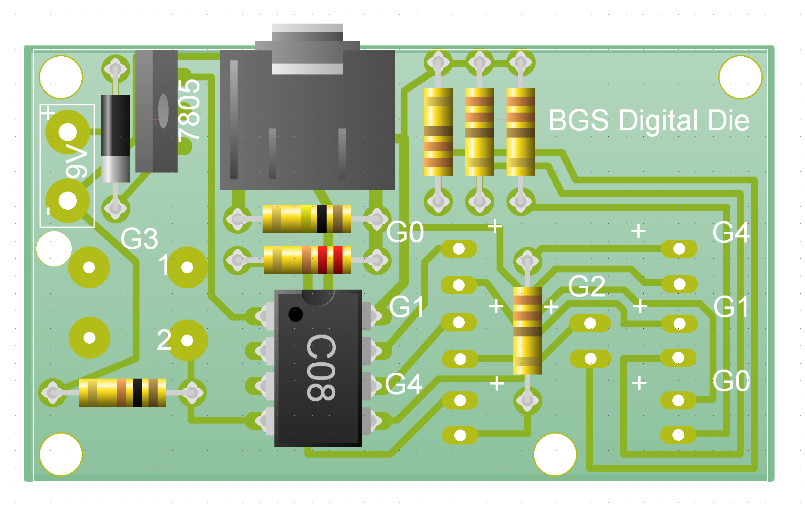
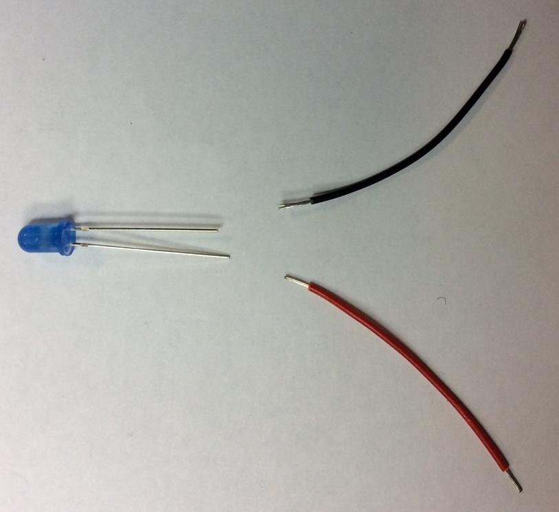
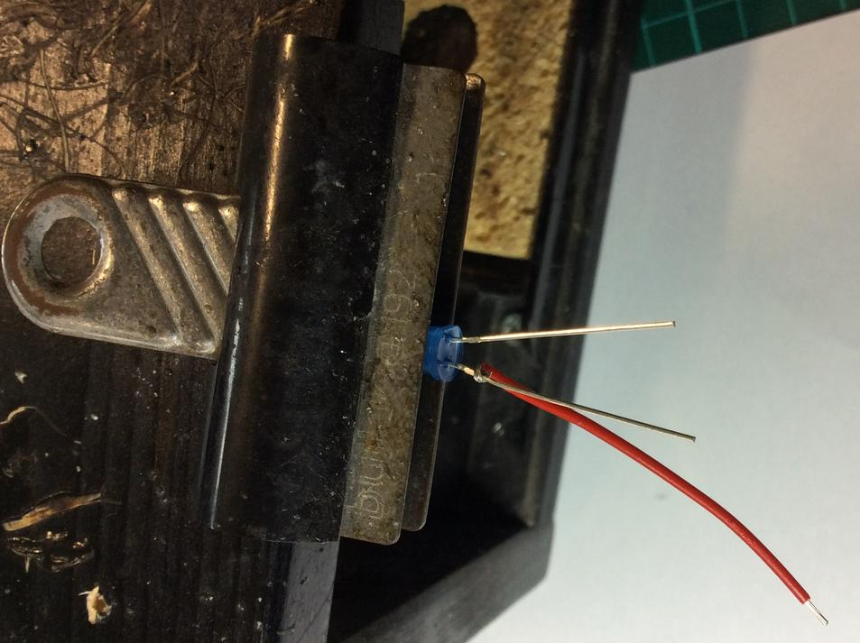
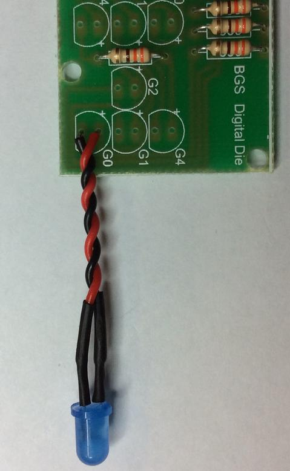

The Digital Die
1 Soldering the board
Build It
- Your initial board should look like this.

- You should be able to solder on the first few components without any guidance.
- Start with the smallest components first.
- Don't solder on the LEDs, battersnap or switch yet.
- Make sure the diode and the 7805 voltage regulator are in the correct way around (or you might give yourself a bit of a suprise).
- Your board should look like this when it is finsihed.

Build It
- With the basic components soldered to the board, you now need to add in the LEDs.
- The LEDs need to be on flying wires.
- Follow the guide below carefully.
- Take an LED and two 50mm lengths of multicore wire.

- Wrap the ends of a wire around the leg of the led (red on the long leg).

- Now clamp the LED and use a very small quantity of solder to bond the wire to the leg.

- You can now repeat the process with the other leg.
- Next you'll need two small lengths of heatshrink.
- Slide the heatshrink over the solder-join and use the side of your soldering iron to gently heat the tubing.

- Now you can solder the wires onto your PCB, and twist them so they look neat

- Now just six more LEDs to solder.
Build It
- Your switch and battery-snap are soldered in much the same way.
- Don't forget to pass your battery snap through the strain hole as shown below before soldering it on.

Badge It
- Take a picture of the solder side and component side of your board.
- Take a picture of the flying leads of the LEDs.
- Take a picture of your battery snap and switch.
- Upload your program to your board and make sure it works. Take a short video of your board working.
- Your badge will be awarded according to the quality of your work.